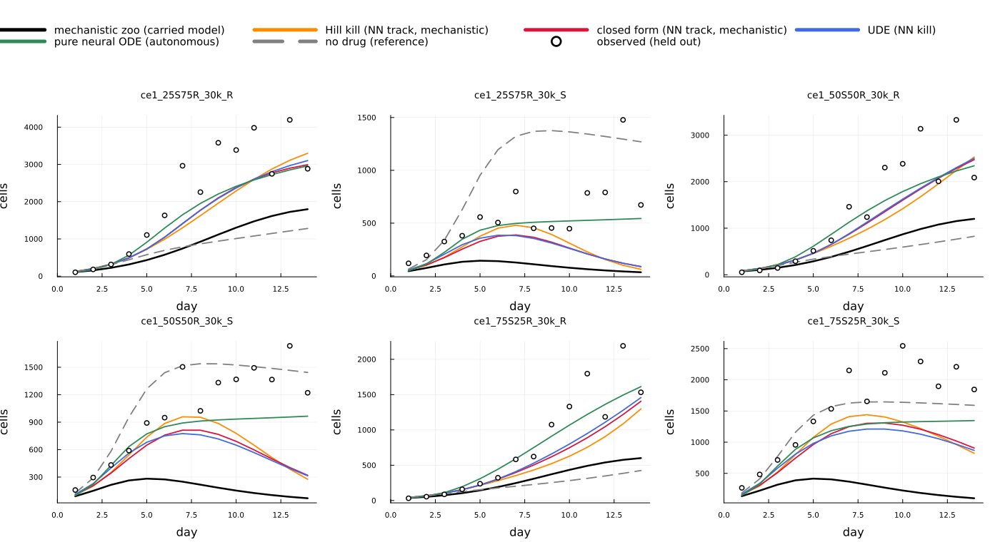

All models predict the same 84 held-out points: the 30k treated (1 µM) cocultures Ce1 — 3 seeding ratios × 2 lines, days 1–14 — from the mechanistic zoo's tidy table (02_mechanical_automatic_package/data/measurements.csv). None of them saw Ce1 while fitting. Every held-out series starts at day 0 from its nominal seeding (100 cells per 30k well × the line's share), as in the zoo's validation; day 0 is not scored.
Training data (matched): the zoo's own training data for this prediction, read from the same table — the 30k monocultures (untreated, 0.62, 1 and 1.47 µM) for growth and drug response, and the 30k untreated cocultures Ce0 for competition. Training series whose first count is more than 3d-fold off nominal get an estimated starting value (2 series), the zoo's rule.
Models: (a) the zoo's carried held-out prediction — crowding refitted to Ce0, kills from the monoculture drug stage — per-point predictions exported from the zoo's own held-out code (scripts/export_mech_heldout.jl; exported 2026-10-07T21:26:47.125 from C:\Research\CancerGrowthDynamics\Modeling_Approaches\02_mechanical_automatic_package\outputs\zoo_fits\zoo_state.jls (modified 2026-10-07T22:35:03.938 UTC)
Stage 3a carried model: cc_full_noC; held-out RMSE over all 84 exported points = 1132.1824266894141 (nRMSE 0.9037190512665352)); (b) this track's Hill kill and the closed form recovered from the UDE in Stage 3 (kill_S = v² + v³·ρ; kill_R = v·ρ + H(v; 0.8, 2)), refitted here on the matched data; (c) the UDE (logistic backbone + 3-8-8-1 NN kill), 5 seeds; (d) the pure neural ODE (per-capita growth = NN(ρ, v, line, low, Q), no time input, no competition term, so it is fitted to the monocultures and Ce0 together), 5 seeds; and a no-drug reference. Bootstrap: 10000 resamples. Runtime: 7.2 min.
| model | kind | parameters | seeds | rmse_cells | rmse_cells_per_seed | nrmse | log_rmse | log_rmse_per_seed | d_rmse_vs_best | d_rmse_ci95 | d_logrmse_vs_best | d_logrmse_ci95 |
|---|---|---|---|---|---|---|---|---|---|---|---|---|
| mechanistic zoo (carried model) | mechanistic (zoo) | 14 | 1 | 1132 | — | 0.9037 | 1.469 | — | 621 | [+467, +749] | 1.121 | [+0.756, +1.400] |
| Hill kill (NN track, mechanistic) | mechanistic (NN track) | 13 | 1 | 653.7 | 654 | 0.5218 | 0.6674 | 0.667 | 142.4 | [+108, +200] | 0.3194 | [+0.117, +0.514] |
| closed form (NN track, mechanistic) | mechanistic (NN track) | 12 | 1 | 633.4 | 633 | 0.5055 | 0.6372 | 0.637 | 122.1 | [+78, +191] | 0.2892 | [+0.081, +0.478] |
| UDE (NN kill) | neural | 121 | 5 | 640.1 | 640 ± 4 | 0.5109 | 0.6369 | 0.638 ± 0.051 | 128.8 | [+75, +200] | 0.289 | [+0.081, +0.472] |
| pure neural ODE (autonomous) | neural | 131 | 5 | 511.2 | 530 ± 23 | 0.4081 | 0.3479 | 0.377 ± 0.034 | 0 | best | 0 | best |
| no drug (reference) | reference | 7 | 1 | 1002 | 1002 | 0.7999 | 0.7773 | 0.777 | 490.9 | [+62, +774] | 0.4294 | [+0.115, +0.682] |
For reference, the zoo's own summary file heldout_ce1.csv reports held-out RMSE 1132.2 cells (nRMSE 0.904) on 84 points; it counts the day-0 rows too, which are the starting values (zero error by construction), so it is slightly lower than the days ≥ 1 value in the table.

| traj_id | mean_obs | mechanistic zoo (carried model) | Hill kill (NN track, mechanistic) | closed form (NN track, mechanistic) | UDE (NN kill) | pure neural ODE (autonomous) | no drug (reference) |
|---|---|---|---|---|---|---|---|
| ce1_25S75R_30k_R | 2138 | 1550 | 880.6 | 843.2 | 838.8 | 783.4 | 1751 |
| ce1_25S75R_30k_S | 568.6 | 585.4 | 477.2 | 482.8 | 481.2 | 290.1 | 566.1 |
| ce1_50S50R_30k_R | 1413 | 1111 | 668.4 | 586.2 | 576.6 | 514.2 | 1313 |
| ce1_50S50R_30k_S | 1026 | 983.6 | 600.3 | 630.1 | 646.3 | 371.1 | 267.9 |
| ce1_75S25R_30k_R | 800.7 | 713.8 | 487.9 | 414.2 | 383.2 | 266 | 823.4 |
| ce1_75S25R_30k_S | 1571 | 1495 | 717.7 | 741.9 | 791.1 | 630.4 | 407.5 |
The same model families fitted to the full NN-track training set of Stages 2–3 (20k and 30k wells, intermittent schedules, low-resource runs; raw-image rebuild with the NN track's QC) and scored on the same points, next to the matched fits. See also the learning curve (Stage 7).
| model | training | rmse_cells | rmse_cells_per_seed | nrmse | log_rmse |
|---|---|---|---|---|---|
| Hill kill (NN track, mechanistic) | full NN-track set (20k + 30k, intermittent, low resource) | 605.4 | 605 | 0.4832 | 0.4789 |
| Hill kill (NN track, mechanistic) | matched (zoo's 30k monocultures + Ce0) | 653.7 | 654 | 0.5218 | 0.6674 |
| closed form (NN track, mechanistic) | full NN-track set (20k + 30k, intermittent, low resource) | 576.7 | 577 | 0.4603 | 0.4273 |
| closed form (NN track, mechanistic) | matched (zoo's 30k monocultures + Ce0) | 633.4 | 633 | 0.5055 | 0.6372 |
| UDE (NN kill) | full NN-track set (20k + 30k, intermittent, low resource) | 597.1 | 597 ± 5 | 0.4766 | 0.4182 |
| UDE (NN kill) | matched (zoo's 30k monocultures + Ce0) | 640.1 | 640 ± 4 | 0.5109 | 0.6369 |
| pure neural ODE (autonomous) | full NN-track set (20k + 30k, intermittent, low resource) | 602.1 | 605 ± 46 | 0.4806 | 0.615 |
| pure neural ODE (autonomous) | matched (zoo's 30k monocultures + Ce0) | 511.2 | 530 ± 23 | 0.4081 | 0.3479 |
Loss: the zoo fits squared errors in cells (with the run's residual weighting); the NN track fits squared errors of log counts (σ = √(0.15² + (SEM/mean)²)). Each arm is therefore favoured on the metric matching its loss: cells-RMSE for the zoo, log-RMSE for the NN track. Both metrics are reported for that reason.
Model choice: the zoo's Stage 3a structure, its weighting scheme and drug model were chosen with Ce1 in the fitted data (stated in the zoo's validation.toml); only its crowding parameters are refitted without Ce1 here. The NN-track structures (and the closed form's terms, chosen in Stage 3 on the full NN-track training set) were fixed without Ce1 by any automated step.
What is refitted on Ce0: the zoo refits a shared K, both crowding coefficients and a sensitive death rate; the NN-track UDE / Hill / closed form refit only the two competition coefficients (K stays per line from the monocultures); the pure neural ODE fits everything jointly on monocultures + Ce0.
Observation model: the NN-track models predict counts + a fitted detection floor (≈5 cells); the zoo predicts counts.
Parameter counts: zoo = free parameters along its path (Stage 1 growth + Stage 2b drug of each line + the Ce0 refit); NN track = parameters that act on these normal-medium 30k predictions (r, K per line, γ, floor, drug term, 2 competition coefficients); estimated starting values are excluded from both.